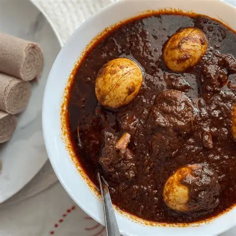

Doro Wat is Ethiopia's national dish — a deeply spiced chicken stew simmered in a rich, fiery berbere sauce with caramelized onions and hard-boiled eggs. It's traditionally served with injera and is a centerpiece dish at Ethiopian celebrations and gatherings.